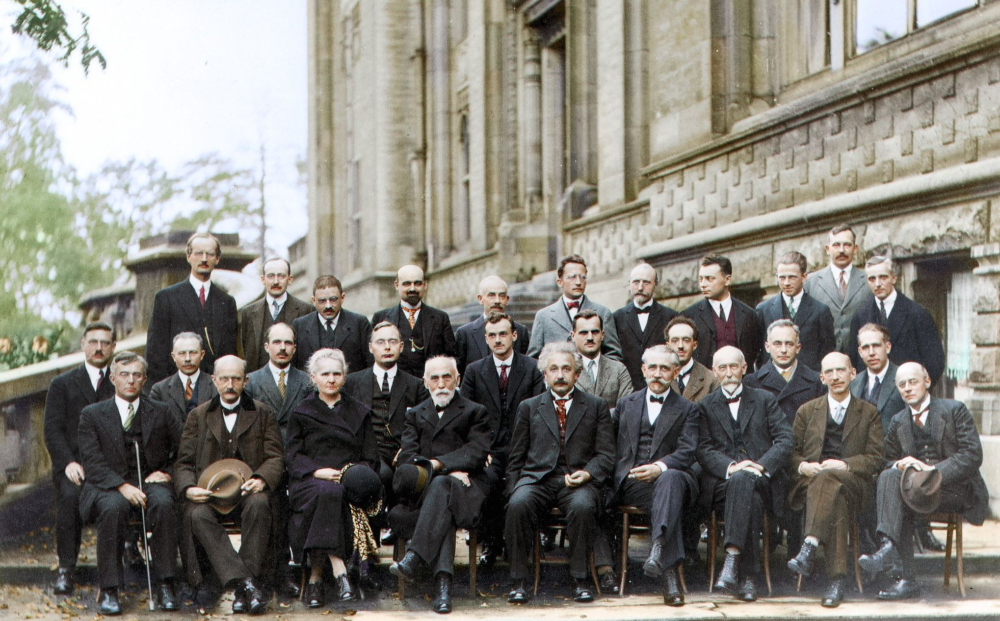
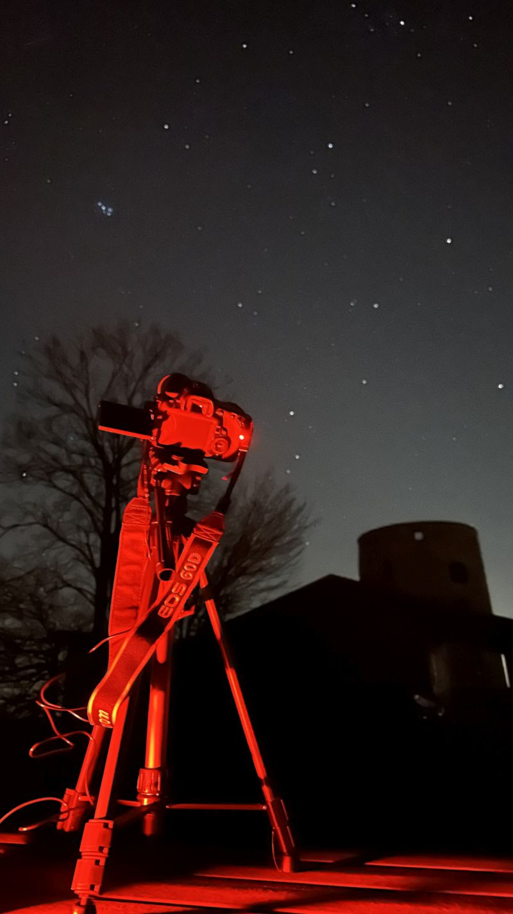

Explore the Universe
Eine Reise durch den Kosmos mit Bildern von entfernten Galaxien, Nebeln und Sternen.
Deep Sky Objects aufgenommen mit Smart-Teleskop und DSLR
Objektgrößen und Entfernungen
Scrolle horizontal. Nutze die Maus oder die Pfeiltasten deiner Tastatur im Overlay.


Deep Sky Astrophotography verbindet den Menschen mit der Natur und offenbart eine weitere verborgene Facette der Existenz. Mit heutigen technischen Hilfsmitteln, die zwar im Inneren komplex, aber für die breite Masse einfach zu bedienen sind, kann das Unerreichbare sichtbar gemacht werden.
Am Anfang benötigt der interessierte Amateur Astonom nur zwei Dinge: Die offenen Augen zum Himmel gerichtet.
